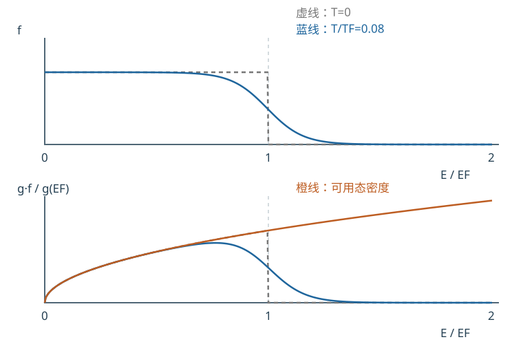

19.3 金属中自由电子的分布规律
一个电子在盒子中有离散能级；金属里有大量电子，不能全塞到最低级。依次解决“多少个可用态、各态占不占、怎样产生电流”，就能理解费米能、电子热容与电导率。
核对范围：已对照纸345—350页，按教材顺序重建三维态数、费米能和输运推导，合并三处重复分布说明。铜的尺度与保留的新编数值已独立复算；态密度积分、有限温粒子数和电导率关系另作数值交叉核验。未见出版社答案。
一、自由电子模型到底忽略了什么？
价电子可在整个金属内延展，离子实形成晶格。最简单模型把内部平均势设为常数（取0），忽略电子间相互作用及晶格周期势的细节，以边界限制电子。这个模型可解释若干简单金属的量级，不能精确代表所有金属，也不能单凭“有电子”区分金属和绝缘体。
以边长a的立方盒、无限高壁近似，波函数分别为三个正弦驻波的乘积，边界要求nₓ、nᵧ、n_z=1,2,…：
此处m取自由电子质量mₑ；用有效质量替换要另说明能带近似。驻波不是具有确定正动量πℏnₓ/a的平面波：它是正负传播分量的组合，⟨pₓ⟩=0、⟨pₓ²⟩=(πℏnₓ/a)²。教材由波长写动量时，在这里应理解为用于动能的大小/平方。有限盒最低级为(1,1,1)，并非严格E=0；宏观连续近似才把能带底作为积分下限0。
二、态密度：先数座位，暂时不问坐了多少电子
把三个正整数画在量子数空间里，半径rₙ满足rₙ²=nₓ²+nᵧ²+n_z²=2ma²E/(π²ℏ²)。E以下的空间轨道对应第一卦限球内格点。宏观a很大、格点很多时，以体积近似计数；每一空间轨道有两种自旋，最多容纳两个自旋相反电子。
=V(2m)³ᐟ²E³ᐟ²/(3π²ℏ³)，V=a³；
g(E)=(1/V)dNstates/dE
=(2m)³ᐟ²√E/(2π²ℏ³)，E≥0。
第一个2来自自旋，1/8来自正量子数范围；都不能漏，也不能计完自旋再乘2。g是单位体积、单位能量的可用单粒子态数，SI单位m⁻³·J⁻¹，不是已占据电子数。精确小盒仍是一串离散能级，平滑g是宏观近似。
也可采用周期边界，允许波矢格距2π/a，在整个k空间球中数2V/(2π)³×(4πk³/3)，再代E=ℏ²k²/(2m)，得到同一体积主项。不要把“整个球计数”与“正卦限驻波格距”混搭，否则会多算8倍。
若g以J⁻¹给出，dE就必须用J；改以eV作横轴时g每eV=e·g每J，其中e的数值为1.602×10⁻¹⁹J/eV。这个换算只改横轴单位，不能额外改变积分的电子数。
三、把电子填进去：费米能与占据概率
T=0的基态从低能向上填，每个含自旋的单粒子态最多一个电子。填到最高能量EF，则单位体积电子数n满足：
=(2mEF)³ᐟ²/(3π²ℏ³)，
EF=ℏ²(3π²n)²ᐟ³/(2m)。
同一模型还给kF=(3π²n)¹ᐟ³，vF=ℏkF/m=√(2EF/m)，TF=EF/kB。vF是零温填充边缘的速度大小；平均矢量速度仍为0，因相反方向成对抵消。TF是能量尺度的温度单位，不是样品温度。
教材铜的尺度，独立检查
教材EF≈7.0eV。换成J为1.1215×10⁻¹⁸J，以m=9.109×10⁻³¹kg求vF≈1.57×10⁶m/s，取两位约1.6×10⁶m/s；TF≈8.12×10⁴K。300K时kBT≈0.0259eV，T/TF≈0.00369，热激发尺度远小于费米能。
对应kF≈1.36×10¹⁰m⁻¹，λF=2π/kF≈0.464nm，与原子间距同量级，不能把“电子波长总远大于晶格周期”当成全部金属自由电子模型的普遍前提。
有限温热平衡下，化学势μ由电子总数决定；占据概率：
dnoccupied=g(E)f(E)dE，
n=∫₀∞g(E)f(E)dE。
此处μ是化学势，不是上一节的约化质量。T>0时f(μ)=1/2；这表示一个给定态的平均占据，不是全材料一半电子。低于μ越多越接近1，高于μ越多越接近0；f(E)本身不是随机抽一个电子的能量概率密度，后者要用g(E)f(E)/n。
μ(0)=EF；低温简单金属可近似μ≈EF，却不应对所有温度都写成严格等号。固定n的三维自由气，低温修正为μ≈EF[1−(π²/12)(T/TF)²]。在有限T不再有最高占据能量的硬截断，尾部概率虽小但非零。

教材用海面薄层形容热激发，指能量分布上的薄层，并非金属空间表面的一层电子。多数电子在低温下不能轻易换占据，是因为附近末态已满；不是被钉在空间不动。“只能获得kT能量”也只是典型尺度说法，不是每次碰撞能量的严格上限。
保留的新编例：两个快速检查
若EF=1.38×10⁻¹⁹J、kB=1.38×10⁻²³J/K，则TF=1.00×10⁴K。若某态E=μ，不论有限温T取多少，指数为0，f=1/2。这两题分别求能量尺度和单态概率，不能互换物理意义。
四、零温动能不为零，为什么电子热容仍很小？
零温总动能密度u₀=∫₀ᴱᶠEg(E)dE，因g∝E¹ᐟ²，分子积分为(2/5)CEF⁵ᐟ²，n=(2/3)CEF³ᐟ²，故u₀=(3/5)nEF。热容测的是能量随温度的变化率，不直接测零温已经有多少动能。
只有约g(EF)kBT量级电子的占据显著改变，每个获得约kBT的额外能量，因此Δu约g(EF)(kBT)²，热容∝T，远小于经典每电子(3/2)kB。这是量级推理，不能从它冒出精确π²系数。
教材准确系数从哪里来：低温积分展开
对光滑Φ，低温积分∫Φ(E)f(E)dE≈∫₀ᵘΦ(E)dE+(π²/6)(kBT)²Φ′(μ)，高阶项略去。先用Φ=g并保持n不变，求得上面的μ修正；再用Φ=Eg，代入同一μ，得到：
cV,e=du/dT≈(π²/2)nkB²T/EF。
这里c为每体积热容，固定n与体积，且T≪TF、态密度在热能窗口内平滑。不能在求u时将μ永远固定EF却仍声称粒子数严格不变。
每摩尔有z个导电电子/原子时，电子摩尔热容CV,e≈(π²/2)zR·T/TF。以铜尺度、z=1、300K估得约0.152J/(mol·K)，远小于晶格高温极限3R≈24.9J/(mol·K)。原子振动是三个坐标、六个二次能量项，不宜简单说成“六个独立位移自由度”。真实晶格低温热容也会下降，不能把3R用于所有温度。
五、电流：费米球偏移与动量弛豫
平衡时分布在k空间对称，速度相反的态电流相抵消。弱电场下电子受力−eE，分布出现小偏移δk；费米球中的态可整体重新标记，泡利原理并不禁止所有态一起改变。线性差分δf≈−δk·∇kf₀主要出现在费米边缘，故“输运响应由费米面附近决定”和公式使用总密度n并不矛盾。
把平均动量因散射的衰减写成−mvd/τ，τ为动量弛豫时间，不必等于任意碰撞的平均间隔。均匀稳恒弱场、单一各向同性抛物色散及常τ近似给：
稳态：vd=−eτE/m；
j=−nevd=σE，σ=ne²τ/m。
电子漂移与电场相反，常规电流与电场同向。vF是微观速度尺度，vd是小的定向平均；不能把vF直接代入j=−nevd。稳态τ有限；若无弛豫，该方程不产生有限的直流稳态电阻，不能一边令τ→∞一边仍要求固定漂移速度。
为什么只有费米面变化，σ中却没有“热激发比例”？
零温极限的各向同性输运积分给σ=(e²τ/3)vF²g(EF)。由g(EF)=3n/(2EF)、vF²=2EF/m，直接化为ne²τ/m。两种写法描述同一响应，不能再把n乘一个随意的kT/EF比例，否则重复扣除。若想算热容，权重不同，不能照搬这段消去。
动量弛豫可由缺陷、杂质、晶格振动等引起；理想静态周期势应先形成能带态，不是每遇一个离子就像小球撞墙，也不要求每次散射恰好掉头。教材“倒逆”图是直观示意。λ≈vFτ是输运平均自由程的简化估计，量级依温度、纯度及样品而变，不把“低温达厘米”当成任意金属通用数据。
完美普通晶格内缺少某类散射，并不自动推出超导：超导还涉及特定的量子相和磁响应，见19.6。长时强场的真实能带动力学也超出这里的弱场抛物近似。
保留的新编例：电导率、方向与速度检查
给n=1.0×10²⁸m⁻³、e=1.6×10⁻¹⁹C、τ=1.0×10⁻¹⁴s、m=9.1×10⁻³¹kg，σ=ne²τ/m=(2.56×10⁻²⁴)/(9.1×10⁻³¹)≈2.81×10⁶S/m。
若E=1.0V/m沿+x，则vd,x≈−1.76×10⁻³m/s，jₓ≈+2.81×10⁶A/m²。用给定n再求vF约7.7×10⁵m/s、λ约7.7nm；可见漂移远小于费米速度。单位S/m乘V/m为A/m²，方向和单位均相符。这是新编参数模型，不是某材料的实测值。
六、使用条件与自测
本节公式链：三维抛物色散和两自旋→g∝√E；零温填充→EF∝n²ᐟ³；低温热平衡→只有边缘占据显著变化；弱场、近似常τ→σ=ne²τ/m。不同维数、复杂能带、强相互作用或强非平衡下要重建模型，不能只换一个数。
1．n变为8倍，E_F、v_F怎样变？
同质量三维模型：EF变为8²ᐟ³=4倍，vF变为2倍。不要把能量和速度都按n线性放大。
2．g(E)dE有100个可用态，f=0.05，有多少电子？
在所选体积中期望占据5个。若g是每体积态密度，还须先乘体积；不能把“态数”当成“能级的不同能量值数”。
3．T=0仍有v_F，为什么无自发电流？
相反速度占据对称，矢量和为0。非零动能不意味着非零净流。
4．只要晶体中电子是延展态，就一定像金属导电吗？
还要看能带是否填满、附近有没有可响应的空态；完整答案见下一节。自由电子气缺少带隙，不能独立解释绝缘体。